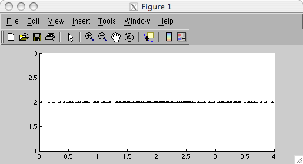
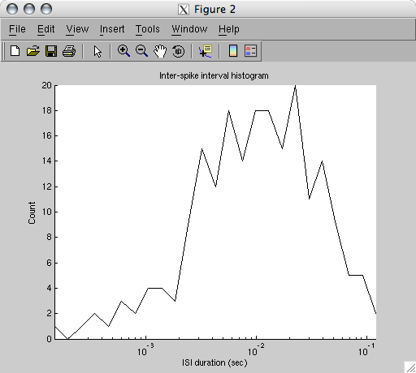
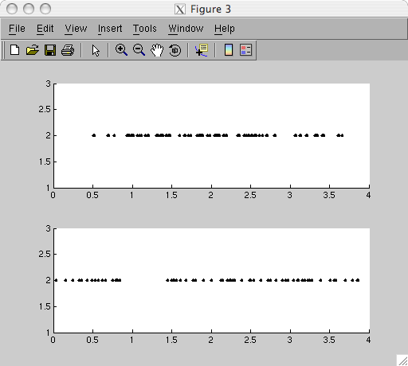
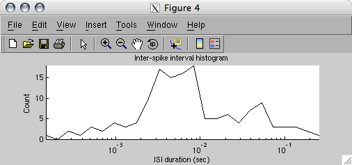
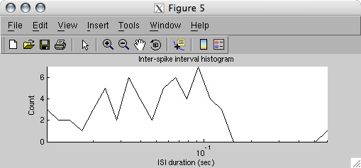
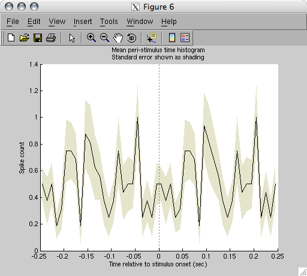

| Spike Toolbox |
|
Spike Toolbox tutorial
Analysing the received trains
 De-multiplexing spike trainsAnalysis of the spike trainPeri-Stimulus Time Histogram
De-multiplexing spike trainsAnalysis of the spike trainPeri-Stimulus Time Histogram
De-multiplexing spike trains
stMonitored contains the spikes resulting from the stimulus we sent to the chip. We stimulated three neurons, so the spikes in stMonitored come from those three neuron addresses. Unfortunately they're all contained in a single spike train object. (A raster plot of the multiplexed trains is in the previous section.) The STExtract function can de-multiplex a spike train by extracting spikes from a restricted set of addresses and returning them in a new spike train object.
[stExtTrain] = STExtract(stTrain, nAddr1, nAddr2, ...)
[stExtTrain] = STExtract(stTrain, [nAddr1Min nAddr1Max], [nAddr2Min nAddr2Max], ...)
In this example we will extract the spikes from neuron 2 only. See the STExtract documentation for information about extracting ranges of spike addresses.
stSingle = STExtract(stMonitored, 2);
STPlotRaster(stSingle);

Analysis of the spike train
The toolbox provides many functions for spike train analysis. A listing of these is available in the categorical function index. In this example we'll look at the ISI structure of the train, then filter out bursts and look again. STSieve performs filtering based on ISI.
[stFiltTrain, stRejectTrain] = STSieve(stTrain, fMinISI, fMaxISI)
STSieve splits a spike train into two parts: stFiltTrain will be a spike train containing all spikes with ISI falling between fMinISI (exclusive). and fMaxISIstRejectTrain will contain all spikes falling outside these ISI limits.
STISIHist(stSingle, true, 25);

[stNonBursts, stBursts] = STSieve(stSingle, 10e-3, []);
STPlotRaster({stBursts; stNonBursts})

STISIHist(stBursts, true, 25);
figure;
STISIHist(stNonBursts, true, 25);
 
Note that the ISI histogram for the non-burst spikes exclusively contains ISIs greater than 10 us. Since stBursts contains bursting pairs, but left at their original time, the ISI histogram for stBursts has some ISIs greater than 10 us.
Peri-Stimulus Time Histogram
STPSTimeHist can calulate a Peri-Stimulus Time Histogram from a spike train and a vector of stimulus onset times.
[vPSTHist, tBinCentres, vStdErr] = ...
STPSTimeHist(stTrain, vtStimOnset <, vtWindow, nNumBins>)
This doesn't make a lot of sense with this particular spike train, since it wasn't generated from repeated stimulus presentations, but let's pretend we had a new stimulus every 250 ms.
STPSTimeHist(stSingle, 0:0.25:3.75)
--- STPSTimeHist: Warning: Stimulus-aligned time window begins before
the start of the spike train
--- STShift: The time offset was negligible for shifting the mapped train

|
|
Configuring the toolbox
|